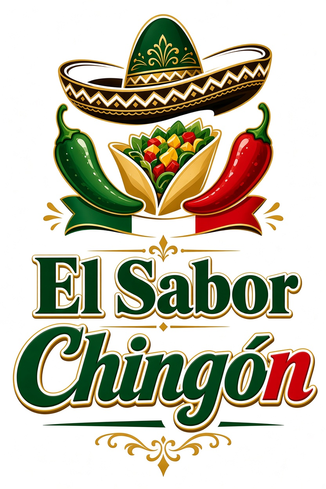
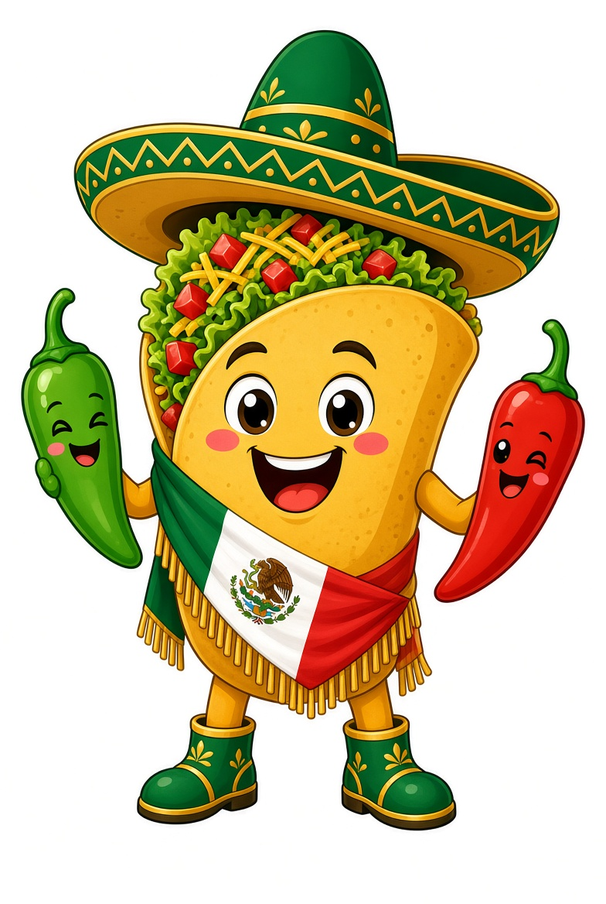

Ofrecer la auténtica comida mexicana hecha con ingredientes frescos y recetas tradicionales, para que cada cliente sienta el verdadero sabor de México en cada bocado.

Ser el restaurante de comida mexicana más querido de la región, reconocido por nuestro sabor inigualable, ambiente familiar y el orgullo de nuestras raíces.
Todo comenzó en una pequeña cocina familiar. Con recetas heredadas de la abuela y muchas ganas de compartir el verdadero sabor de México, nació la idea de El Sabor Chingón.
Abrimos nuestro primer local. La gente empezó a llegar atraída por el aroma de los chiles, el mole y los tacos recién hechos. Poco a poco nos convertimos en un punto de reunión familiar.
Expandimos el menú y mejoramos el local, pero sin perder la esencia. Seguimos cocinando como en casa: con tiempo, cariño y los mejores ingredientes.
Seguimos aquí, con la misma pasión del primer día. Cada platillo que sale de nuestra cocina lleva el orgullo de ser mexicanos y el deseo de hacerte sonreír con cada bocado.